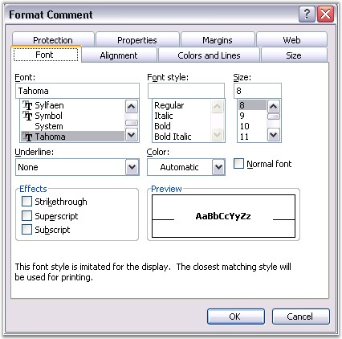
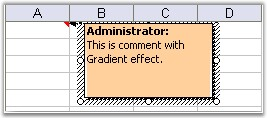
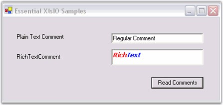

Microsoft Excel has the ability to insert Comments in cells. Comments enable a user to get additional information about a cell, such as, what the value represents. You can insert and format comments through the Insert menu in Excel. You can also format the comments inserted through the Format Comment dialog box.

Figure 141: Format Comment Dialog Box
XlsIO has APIs for inserting both Regular and Rich Text comments by using the ICommentShape interface. It has various properties to format the comments. Following code example illustrates how to insert comments.
|
[C#]
// Insert Comments. // Adding comments to a cell. sheet.Range["A1"].AddComment().Text = "Regular Comment";
// Sets author of the comment. sheet.Range["A1"].AddComment().Author = "Syncfusion";
// Add Rich Text Comments. IRange range = sheet.Range["A2"]; range.AddComment().RichText.Text = "RichText"; IRichTextString rtf = range.Comment.RichText;
// Formatting first 4 characters. IFont redFont = workbook.CreateFont(); redFont.Bold = true; rtf.SetFont(0, 3, redFont); |
|
[VB.NET]
' Insert Comments. ' Adding comments to a cell. sheet.Range("A1").AddComment().Text= "Regular Comment"
' Sets author of the comment. sheet.Range("A1").AddComment().Author = "Syncfusion"
' Add Rich Text Comments. Dim range As IRange = sheet.Range("A2") range.AddComment().RichText.Text = "RichText" Dim rtf As IRichTextString = range.Comment.RichText
' Formatting first 4 characters. Dim redFont As IFont = workbook.CreateFont() redFont.Bold = True rtf.SetFont(0, 3, redFont) |

Figure 142: XlsIO with Comments Inserted
It is also possible to read the Rich Text string formatting. The following code example illustrates how rich text comments from a cell are read by using XlsIO, and then displayed in a RichTextBox.
|
[C#]
// Read plain text comment. this.txtPlainText.Text = sheet.Range["A1"].Comment.Text;
// Read Rich Text Comment. this.richTextBox1.Rtf = sheet.Range["A2"].Comment.RichText.RtfText; |
|
[VB.NET]
' Read plain text comment. Me.txtPlainText.Text = sheet.Range("A1").Comment.Text
' Read Rich Text Comment. Me.richTextBox1.Rtf =sheet.Range("A2").Comment.RichText.RtfText |

Figure 143: Reading Rich Text Comments
You can also fill the comments with various types of fills by using the IFill interface. Following code example illustrates how to fill the comment shape with a TwoColor gradient.
|
[C#]
shape.Fill.TwoColorGradient(); shape.Fill.GradientStyle = ExcelGradientStyle.Horizontal; shape.Fill.GradientColorType = ExcelGradientColor.TwoColor; shape.Fill.ForeColorIndex = ExcelKnownColors.Red; shape.Fill.BackColorIndex = ExcelKnownColors.White; |
|
[VB.NET]
shape.Fill.TwoColorGradient() shape.Fill.GradientStyle = ExcelGradientStyle.Horizontal shape.Fill.GradientColorType = ExcelGradientColor.TwoColor shape.Fill.ForeColorIndex = ExcelKnownColors.Red shape.Fill.BackColorIndex = ExcelKnownColors.White |
XlsIO also provides options to resize the comment size, and move/size with cell by using the IsMoveWithCell and IsSizeWithCell properties. You can also autofit the size of the comment by using the AutoFit property.
 Note: Currently it is not possible to insert
preformatted RTF tags in Excel by using XlsIO.
Note: Currently it is not possible to insert
preformatted RTF tags in Excel by using XlsIO.